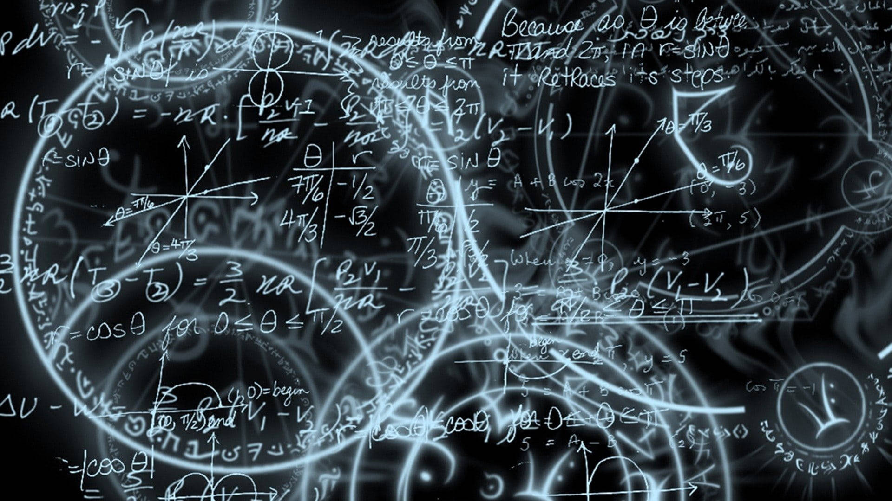
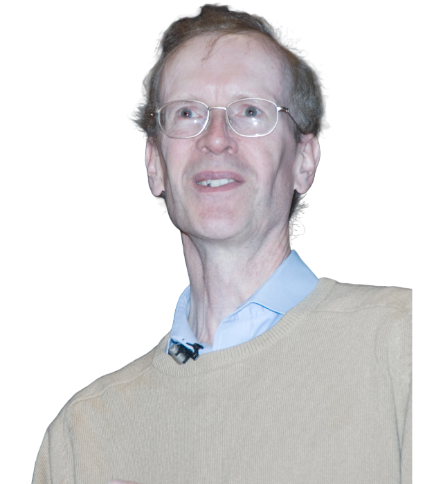

1945 d.Hr. - Prezent

Matematica contemporană este caracterizată de o diversificare extremă a ramurilor și de colaborări interdisciplinare. Probleme de secole sunt în sfârșit rezolvate (cum a fost cazul teoremei lui Fermat), iar computerele au devenit instrumente esențiale atât în demonstrarea teoremelor, cât și în modelarea fenomenelor complexe. Matematica pură se împletește din ce în ce mai mult cu aplicații în biologie, economie, inteligență artificială, criptografie și fizică teoretică. De asemenea, este epoca în care colaborările globale, publicațiile online și bazele de date matematice au revoluționat modul de lucru al comunității științifice.
Andrew Wiles (n. 1953) este un matematician britanic celebru pentru demonstrarea Teoremei lui Fermat, una dintre cele mai faimoase conjecturi nerezolvate din istoria matematicii. În 1994, după aproape un deceniu de muncă în secret, Wiles a demonstrat această teoremă folosind metode moderne din teoria numerelor și forme modulare, unind domenii aparent distincte ale matematicii. Un fapt emoționant este că Wiles a descoperit teorema lui Fermat la vârsta de 10 ani într-o bibliotecă locală și a decis atunci că va fi misiunea vieții sale să o demonstreze.

Grigori Perelman (n. 1966) este un matematician rus care a rezolvat Conjectura lui Poincaré, una dintre cele șapte probleme ale mileniului propuse de Clay Mathematics Institute. Folosind teoria fluxului Ricci, Perelman a oferit o demonstrație completă în 2003, schimbând definitiv topologia tridimensională. Cu toate acestea, el a refuzat premiul de un milion de dolari și Medalia Fields. Perelman este cunoscut pentru stilul său de viață retras și refuzul de a participa la comunitatea matematică tradițională, preferând anonimatul și cercetarea în solitudine.
Terence Tao (n. 1975) este un matematician australian de origine chineză, considerat unul dintre cei mai mari matematicieni ai vremurilor noastre. Contribuțiile sale acoperă domenii vaste precum teoria numerelor, analiza armonică, ecuații diferențiale parțiale, combinatorică și multe altele, adesea stabilind legături între ramuri aparent fără conexiune. Tao a fost un copil-minune, având un IQ estimat peste 230 și câștigând medalia de aur la Olimpiada Internațională de Matematică la doar 13 ani. În prezent, este profesor la UCLA.
Maryam Mirzakhani (1977 – 2017) a fost o matematiciană iraniană și prima femeie care a primit Medalia Fields, echivalentul Premiului Nobel în matematică. A lucrat în geometria hiperbolică, teoria Teichmüller și dinamica suprafețelor Riemann, oferind contribuții esențiale în înțelegerea modului în care se comportă formele complexe în spații abstracte. Mirzakhani era cunoscută pentru metoda ei vizuală de lucru: desena pe pereți sau mese mari acoperite cu foi de hârtie, urmărind forme geometrice până când descoperea tipare ascunse.
Manjul Bhargava (n. 1974) este un matematician canadian-american de origine indiană, laureat al Medaliei Fields pentru lucrările sale inovatoare în teoria numerelor. Bhargava a dezvoltat noi metode de clasificare a formelor algebrice și a adus o viziune modernă în probleme vechi din aritmetica algebraică, cu aplicații profunde în criptografie și codare. Este pasionat de muzică clasică indiană și adesea compară structura matematică cu structura muzicală, susținând că ambele sunt forme de exprimare abstractă ale frumuseții și armoniei.